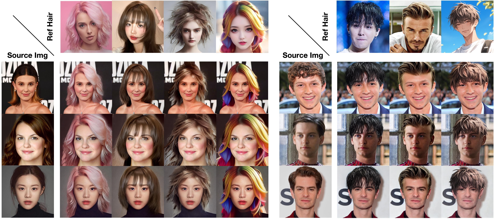
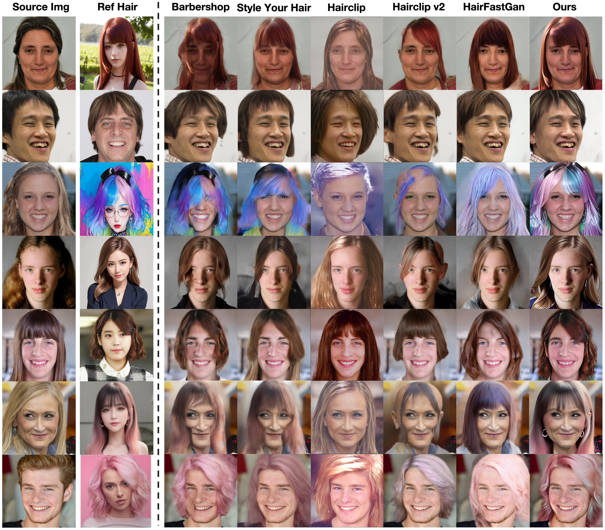
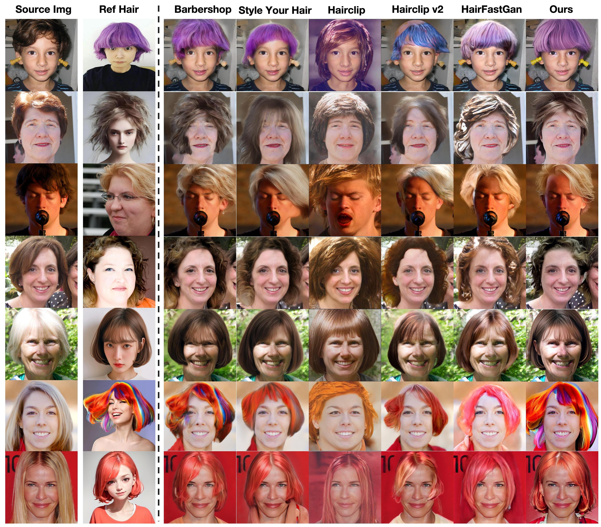

Stable-Hair: Real-World Hair Transfer via Diffusion Model
Shanghai Jiao Tong University, Tiamat AI, Shenyang Institute of Automation Chinese Academy of Sciences, National University of Singapore

Current hair transfer methods struggle to handle diverse and intricate hairstyles, thus limiting their applicability in real-world scenarios. In this paper, we propose a novel diffusion-based hair transfer framework, named \textit{Stable-Hair}, which robustly transfers a wide range of real-world hairstyles onto user-provided faces for virtual hair try-on. To achieve this goal, our Stable-Hair framework is designed as a two-stage pipeline. In the first stage, we train a Bald Converter alongside stable diffusion to remove hair from the user-provided face images, resulting in bald images. In the second stage, we specifically designed three modules: a Hair Extractor, a Latent IdentityNet, and Hair Cross-Attention Layers to transfer the target hairstyle with highly detailed and high-fidelity to the bald image. Specifically, the Hair Extractor is trained to encode reference images with the desired hairstyles. To preserve the consistency of identity content and background between the source images and the transfer results, we employ a Latent IdentityNet to encode the source images. With the assistance of our Hair Cross-Attention Layers in the U-Net, we can accurately and precisely transfer the highly detailed and high-fidelity hairstyle to the bald image. Extensive experiments have demonstrated that our approach delivers state-of-the-art (SOTA) results among existing hair transfer methods.
With the increasing prevalence of digital media and virtual reality applications, personalized virtual avatars and virtual try-on systems have emerged as a significant research area. Hair transfer is one of the most challenging tasks within this domain. In recent years, the advancements in Generative Adversarial Networks (GANs) have driven significant progress in this field. However, these GAN-based methods often struggle to handle the diverse and complex hairstyles encountered in real-world scenarios, which severely limits their effectiveness in practical applications.
Our Stable-Hair consists of two stages to achieve high-quality hair transfer. First, the user's input source image is transformed into a bald proxy image. This transformation is accomplished using a pre-trained Stable Diffusion (SD) model in conjunction with a specialized Bald Converter. In the second stage, we employ the pre-trained SD model along with a Hair Extractor to transfer the reference hair onto the bald proxy image. The Hair Extractor is responsible for capturing the intricate details and features of the reference hair. These features are then injected into the SD model through newly added hair cross-attention layers. By leveraging these two stages, our method achieves highly detailed and high-fidelity hair transfers, producing natural and visually appealing results.
Compared to other approaches, our method achieves more refined and stable hairstyle transfer without the need for precise facial alignment or explicit masks for supervision.
 The robustness of our method enables the transfer of hairstyles across diverse domains, a capability that previous approaches were unable to achieve. This demonstrates the significant advancements our method offers in the realm of hairstyle transfer.
We also present a range of additional results that demonstrate the robustness and superiority of our approach.
@misc{zhang2024stablemakeup,
title={Stable-Makeup: When Real-World Makeup Transfer Meets Diffusion Model},
author={Yuxuan Zhang, Lifu Wei, Qing Zhang, Yiren Song, Jiaming Liu, Huaxia Li, Xu Tang, Yao Hu, Haibo Zhao},
year={2024},
eprint={2403.07764},
archivePrefix={arXiv},
primaryClass={cs.CV}
}